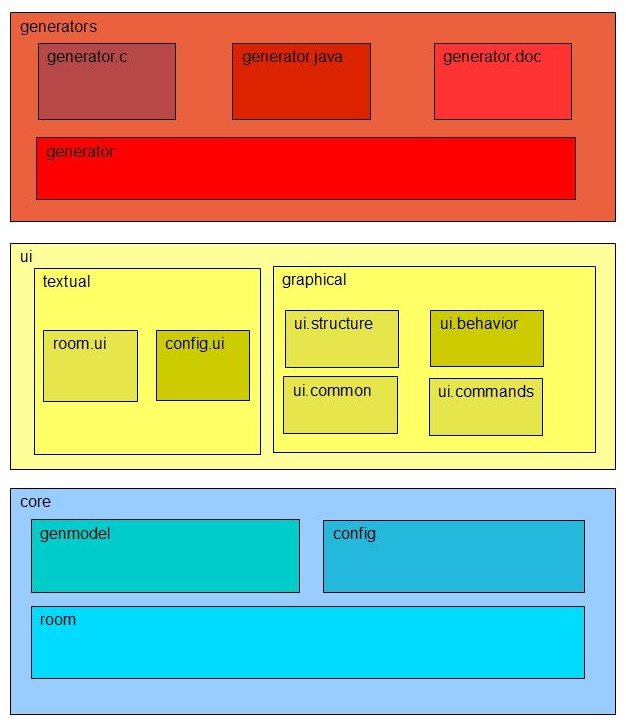

6.1 Architecture
The basic components of eTrice are depicted in the following diagram.

Additional to that the eTrice project comprises runtime libraries and unit tests which are treated in subsequent
sections.
6.1.1 Editor and Generator Components
- core
- core.room
is an Xtext based language called ROOM. It consists of the plug-ins org.eclipse.etrice.core.room
and org.eclipse.etrice.core.room.ui. ROOM is the basic modeling language of eTrice.
- core.config is an Xtext based language called Config. It consists of
the plug-ins org.eclipse.etrice.core.config and org.eclipse.etrice.core.config.ui. Config
is a language designed for the data configuration of model
- core.etphys is an
Xtext based language called etPhys. It consists of the plug-ins org.eclipse.etrice.core.etphys and
org.eclipse.etrice.core.etphys.ui. etPhys is a language designed for the description of physical
systems onto which the logical ROOM systems are deployed.
- core.etmap is an Xtext based language called etMap. It consists of
the plug-ins org.eclipse.etrice.core.etmap and org.eclipse.etrice.core.etmap.ui. etMap is
a language designed for the mapping of logical to physical systems.
- core.genmodel is an EMF based aggregation layer for Room models. It consists of the plugin
org.eclipse.etrice.core.genmodel. A Room model can be transformed into a genmodel which allows
easy access to implicit relations of the Room model.
- ui
- textual
- room.ui is the ui counterpart of core.room.
It consists of the plug-in org.eclipse.etrice.core.room.ui. This plug-in realizes IDE concepts
like content assist, error markers and navigation by hyper links for the Room language.
- config.ui is the ui
counterpart of core.config. It consists of the plug-in org.eclipse.etrice.core.config.ui. This
plug-in realizes IDE concepts like content assist, error markers and navigation by hyper links for the
Config language.
- etphys.ui is the ui
counterpart of core.etphys. It consists of the plug-in org.eclipse.etrice.core.etphys.ui. This
plug-in realizes IDE concepts like content assist, error markers and navigation by hyper links for the
etPhys language.
- etmap.ui is the ui counterpart of core.etmap. It consists of the plug-in
org.eclipse.etrice.core.etmap.ui. This plug-in realizes IDE concepts like content assist, error
markers and navigation by hyper links for the etPhys language.
- graphical
- ui.common is a set of common code for the two diagram editors. It consists of the plug-in
org.eclipse.etrice.ui.common.
- ui.commands encapsulates some commands related to the navigation between eTrice editors. It
consists of the plug-in org.eclipse.etrice.ui.commands.
- ui.structure is the Graphiti based editor for the Actor structure. It consists of the plug-in
org.eclipse.etrice.ui.structure.
- ui.behavior is the Graphiti based editor for the Actor behavior. It consists of the plug-in
org.eclipse.etrice.ui.behavior.
- generators
- generator is a set of general classes and language independent parts of all generators. It consists of the
plug-in org.eclipse.etrice.generator.
- generator.c is the generator for the ANSI-C target language. It consists of the plug-in
org.eclipse.etrice.generator.c.
- generator.cpp is the generator for the C++ target language. It consists of the plug-in
org.eclipse.etrice.generator.cpp.
- generator.java is the generator for the Java target language. It consists of the plug-in
org.eclipse.etrice.generator.java.
- generator.doc is the generator for the model documentation. It consists of the plug-in
org.eclipse.etrice.generator.doc.
6.1.2 Runtimes
Currently eTrice ships with a C and a Java runtime. The C++ runtime is still a prototype. The runtimes are libraries written
in the target language against which the generated code is compiled.
6.1.3 Unit Tests
Most plug-ins and other parts of the code have related unit tests.